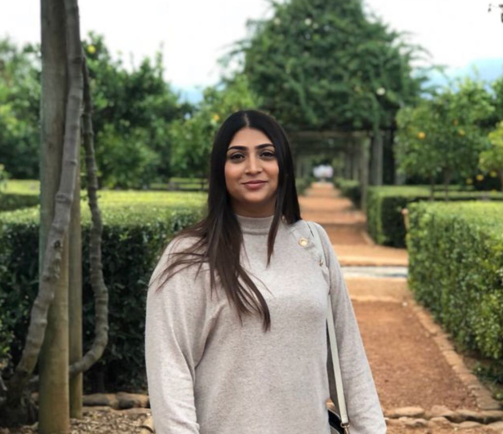

Marjia Ismail

About me:
I recently completed my BTech in Mechatronics Engineering and I am currently completing a Bootcamp in Software Engineering.
I am a conscientious person who pays attention to detail. I'm dedicated, quick to pick up new skills and eager to learn from others.
I am always willing to take on challenges. With my technical and innovative skills I aim to automate areas in my field to improve people's lives.
Skills and competencies:
- Experience in Lathe and CNC operating and programming
- Java
- MySQL
- Python
- html
- Power BI
- Writing of Technical Reports
- WinCC SCADA
- SolidWorks
- AutoCAD
Eduction:
Software Engineering
Institution: HyperionDev
Completion: June 2021
BTech.Mechatronics Engineering
Institution: Cape Peninsula University of Technology
Completion: June 2020
Work experience:
Globeleq South African Management Services
Job Title: Remote Monitoring Centre (RMC) Operator Intern
Year: June 2017 to June 2018
Roles and Responsibilities:
- Remote controlling and monitoring of Droogfontein Solar Power, De Aar Solar Power and Jeffreys Bay Wind Farm.
- Creating and closing the work requests via the Enterprise Resource Planning (ERP)/ Computerized Maintenance and Management System (CMMS) systems.
- Identifying, assessing, tracking and taking initiative of faults by communicating the faults to the relevant parties.
- Completing of compliance reports for scheduled and unscheduled events.
- Gathering and collating of data from Supervisory control and data acquisition (SCADA) and CMMS to monitor system statistics and plant Key performance indicators.
Projects completed:
- HMI SCADA system in TIA Portal used to monitor the performance of Inverters used within the Solar Power plants for effective inverter fault finding and maximum power production.
- Dashboard created in Power BI to analyze the performance of the Wind and Solar Power plants.
- My github link
Contact details:
Contact number: 0711711328
Email address: merziaismail@gmail.com
LinkedIn profile